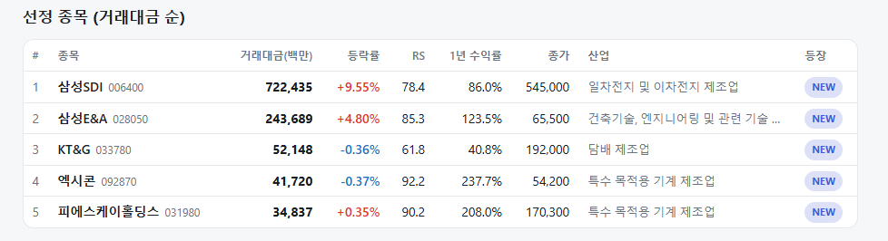
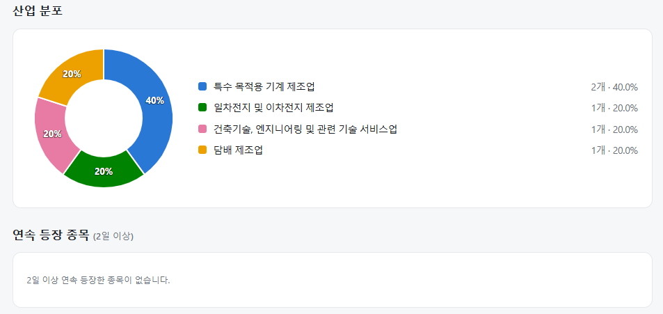
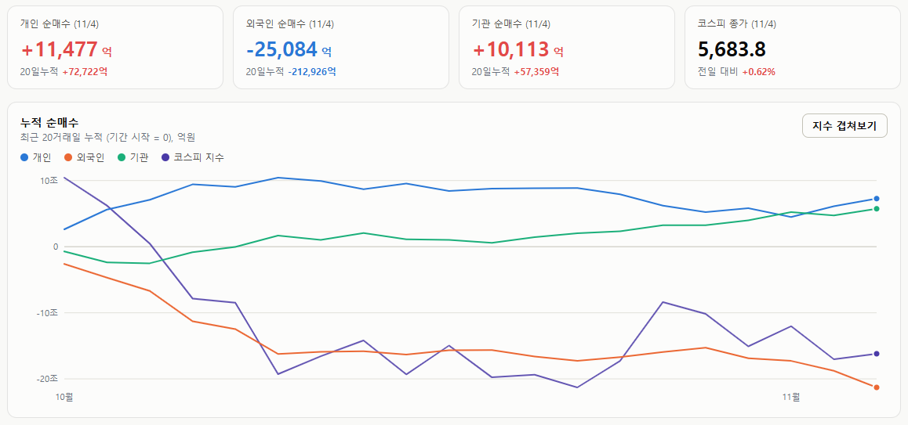

매일의 주도주 정리를 위해 기록합니다.
연속적으로 나온 종목들 또는 상승 후 조정받는 종목 위주로 리서치 해보시면 좋을 것 같습니다.


*오늘의 퀀트픽은 없습니다.
#주도섹터
상승 섹터: 에너지, 2차전지 및 제약·바이오
주요 업종 및 종목: 에너지(+9.56%), 에너지장비및서비스(+11.40%), 전기제품(+6.37%), 제약과생물공학(+0.97%), 삼성SDI(+9.93%), 셀트리온(+5.58%), LG에너지솔루션(+3.99%), 삼성바이오로직스(+2.82%), 한화솔루션.
분석: 에너지 대분류가 +9.56%, 세부 업종인 에너지장비및서비스가 +11.40% 큰 폭으로 상승하며 시장을 주도했습니다. 특히 2차전지 대형주인 삼성SDI(+9.93%)와 LG에너지솔루션(+3.99%)이 강한 반등세를 보였고, 제약·바이오 섹터의 삼성바이오로직스(+2.82%), 셀트리온(+5.58%) 역시 지수 상승에 기여했습니다. 삼성SDI(RS 78.4)가 1위로 신규 진입하며 2차전지 섹터로의 자금 유입을 정량적으로 확인했습니다.
#조정섹터
반도체 밸류체인 및 일부 기계·조선
주요 업종 및 종목: 반도체와반도체장비(-0.34%), 기계(-4.84%), 조선(-1.26%), 삼성전자(-0.91%), SK하이닉스(-0.36%), 기아(-1.14%), 한화에어로스페이스(-0.95%), 두산에너빌리티.
분석: 반도체와반도체장비 업종이 소폭(-0.34%) 조정을 받았습니다. 삼성전자(-0.91%)와 SK하이닉스(-0.36%) 등 반도체 대장주들이 외국인의 매도세에 약보합을 기록했으며, 기아(-1.14%) 및 일부 기계(-4.84%), 조선(-1.26%) 업종 등도 하락하며 코스피 상승 폭을 제한했습니다.
#수급동향

코스피 지수는 +0.62% 상승한 5,683.80으로 마감하며 전일의 하락세를 일부 만회했습니다. 코스닥 지수 역시 +1.50% 상승한 714.95를 기록하며 반등을 시도했습니다.
유가증권시장에서 외국인 투자자는 무려 2조 5,084억 원(20일 누적 -21조 2,926억 원)을 순매도하며 대형주를 중심으로 비중을 크게 축소했습니다. 반면 기관 투자자는 1조 113억 원(20일 누적 +5조 7,359억 원), 개인 투자자는 1조 1,477억 원(20일 누적 +7조 2,722억 원)을 순매수하며 외국인의 물량을 적극적으로 소화했습니다.
전일의 급격한 조정 이후 외국인의 대규모 매도세가 이어졌으나, 기관과 개인의 강력한 저가 매수세가 유입되며 시장 전반에 걸쳐 하방 지지력을 확인하는 하루였습니다. 삼성바이오로직스, LG에너지솔루션 등 핵심 대형주들이 반등하며 지수 상승을 견인했습니다.
블루웨이브 확정, 사라진 것은 불확실성이고 생긴 것은 2년의 교착이다
AP는 11월 3일 밤(미국 동부시간) 민주당의 상원 다수당 확보를 확정했습니다. 아이오와·캔자스·오하이오·사우스캐롤라이나·노스캐롤라이나·뉴햄프셔에서 공화당 의석이 넘어갔고, 하원은 집계 중이지만 민주당 승리가 유력합니다. 트럼프 대통령은 NYT 인터뷰에서 "결과를 전적으로 수용하고 민주당과 협력하겠다"고 말했습니다.
① 서프라이즈가 아니라 해소
폴리마켓은 선거 전날 민주당 양원 싹쓸이 확률을 86%로 보고 있었습니다.결과가 그대로 나왔다는 것은 시장에 새 정보가 들어온 것이 아니라 남아 있던 14%의 불확실성이 사라진 것입니다. 첫 반응이 그렇게 나왔습니다. 미국 야간선물은 개표가 진행되며 낙폭을 빠르게 줄였고, 국내 지수도 오후 들어 낙폭을 축소했습니다. 어제 글의 세 가지 매도 요인(수급·정치·조달 피로) 중 정치가 빠진 것입니다.
역사도 같은 방향입니다. 중간선거 다음 해 S&P500의 12개월 평균 수익률은 약 +14%이고, 지난주 하나증권 자료로 선거 후 6개월 +15.6%였습니다. 다만 두 통계 모두 의회 구도를 가리지 않은 평균입니다. 이번처럼 공화당 대통령에 민주당 양원이라는 조합은 표본이 적고 결과가 엇갈려, "선거 뒤에는 오른다"까지만 말할 수 있고 "이 조합이라서 오른다"고는 말할 수 없습니다.
② 해소된 것과 새로 생긴 것
사라진 것은 불확실성이고, 생긴 것은 2년의 교착입니다. 민주당 하원이 100시간 안에 추진하겠다는 것은 ACA 보조금 복원, 메디케이드 삭감 되돌리기, 관세 철회와 무역 권한의 의회 복원, 이란 전쟁의 의회 승인입니다. 어느 것도 대통령 거부권을 넘지 못합니다. 반대로 대통령이 원하는 추가 감세나 관세도 의회를 넘지 못합니다. 시장이 좋아하는 "큰 정책 변화가 없는 상태"가 2년 보장된 셈이고, 그것이 선거 후 랠리의 전통적 근거입니다.
위험은 다른 데 있습니다. Short Bear가 지적한 "거부권 정치", 즉 예산과 부채한도를 볼모로 한 대치입니다. 민주당 의회가 예산을 막고 대통령이 거부권을 쓰는 구도는 셧다운과 신용등급 소음을 만들 수 있고, 10년물이 5%를 오가는 재정 우려 국면에서는 이것이 작은 변수가 아닙니다. 그리고 트럼프의 "협력하겠다"는 말이 실제로 어디까지인지는 첫 예산 협상에서 드러납니다.
이란 변수는 오히려 가벼워질 수 있습니다. 선거가 끝나면 이란 입장에서 합의를 서두를 유인이 커질 수 있고, 민주당 의회가 전쟁 확전에 대한 승인을 요구하면 대통령은 확전을 결정할 때마다 의회와 공개적으로 싸워야 합니다. 확전이 불가능해지는 것은 아니지만 선택하기 어려워지고, 유가에 붙어 있던 전쟁 프리미엄은 그만큼 줄어듭니다.
③ 한국은 어땠나 — 연기금이 등장했다
국내 증시는 외국인 2.4조 원 순매도로 3거래일 연속 매도 우위였는데, 13시 30분 이후 기관 자금 3천억 원 이상이 들어오며 낙폭을 가파르게 줄였습니다. 연기금 약 1,500억, 금융투자 약 1,000억, 보험·사모·투신이 각각 수백억 원. 금융투자 몫은 외국인 선물 매도에 따른 차익거래라 성격이 다르지만, 나머지는 국내 기관이 십시일반으로 하방을 받친 것입니다.
연기금 자금이 들어왔지만 하루치라 "돌아왔다"가 아니라 "등장했다"가 맞는 표현이고, 외국인 매도가 끝난 것도 아닙니다.
테마는 바로 반응했습니다. 블루웨이브 기대로 태양광·ESS·2차전지·신재생에너지가 급등했습니다. 근거는 IRA 복원 기대인데, 위에서 본 대로 법 개정은 2년 안에 거부권을 넘기 어렵습니다. 민주당 의회가 할 수 있는 것은 추가 축소를 막는 것과 예산 과정에서 집행을 지키는 것입니다. "되살아난다"보다 "더 깎이지 않는다"가 정확한 기대이고, 오늘의 급등은 그 차이를 아직 구분하지 않은 가격입니다.
선거는 결과가 어느 쪽이든 끝나는 순간 매도 이유 하나를 지웠고, 야간선물과 국내 기관 수급이 그것을 보여줬습니다. 남은 것은 헤지펀드 디그로싱과 AI 조달 피로이고, 전자는 되돌림이 빠른 종류이며 후자는 시간이 풀어야 합니다. 새로 생긴 2년의 교착은 시장이 전통적으로 좋아하는 조건이지만, 예산 대치라는 형태로 돌아올 수 있다는 점은 주의해야합니다.
한국은 가격을 이미 많이 치렀고, 오늘 연기금이 등장했으며, 유가와 금리는 선거를 지나며 약해지는 쪽입니다.
기간 조정의 조건이 하나씩 갖춰지고 있습니다.
오늘 하루도 수고하셨습니다.